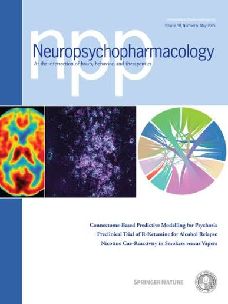

Connectome-based predictive modeling of early and chronic psychosis symptoms

This study directly compared the neural correlates of chronic and early psychosis symptoms using connectome-based predictive modeling (CPM) and resting-state functional magnetic resonance imaging. Publication can be accessed here.
This article was also featured on the journal cover of Neuropsychopharmacology (third panel image) and received a research highlight from the journal and news coverage from the Yale School of Medicine!
 Featuring Christine Cho, photography by Sara (Seo Yeon) Kim
Featuring Christine Cho, photography by Sara (Seo Yeon) Kim